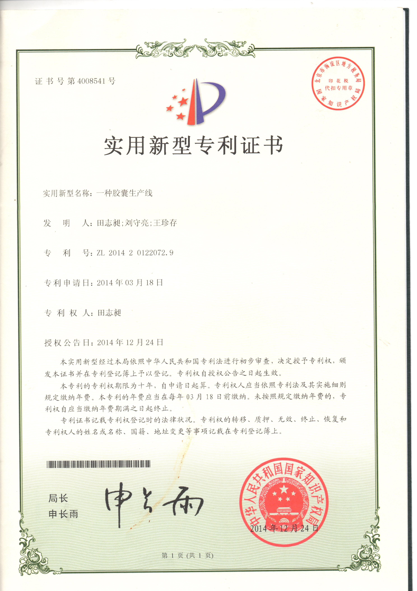

Intellectual Property
Patents and Engineering Innovation
Technology developed around mould-bar transfer and coordinated multi-track structures for hard empty capsule production lines.
Utility ModelPatent type
CN 204038547 UPublication number
24 Dec 2014Publication date

Recorded Patent
A Capsule Production Line
Information is compiled from the available certificate and published text. For legal or commercial use, verify current status and ownership through CNIPA records.
Technical focus
A multi-track mould-bar transfer structure coordinating a lifting platform, transverse transfer device, and longitudinal rails to move several mould bars within the same cycle.
- Multi-track mould-bar transfer
- Multi-position lifting platform
- Coordinated transverse and longitudinal conveying
- For hard empty capsule lines
Selected Drawings